Print and Web Design
University of Maryland's Project Management Center for Excellence is one of the country's premiere business and human resource programs, often attracting people from across the world.
In addition to shaping overall visual style, I was responsible for print and web content promoting their programs of study and events including their annual Project Management Symposium.
 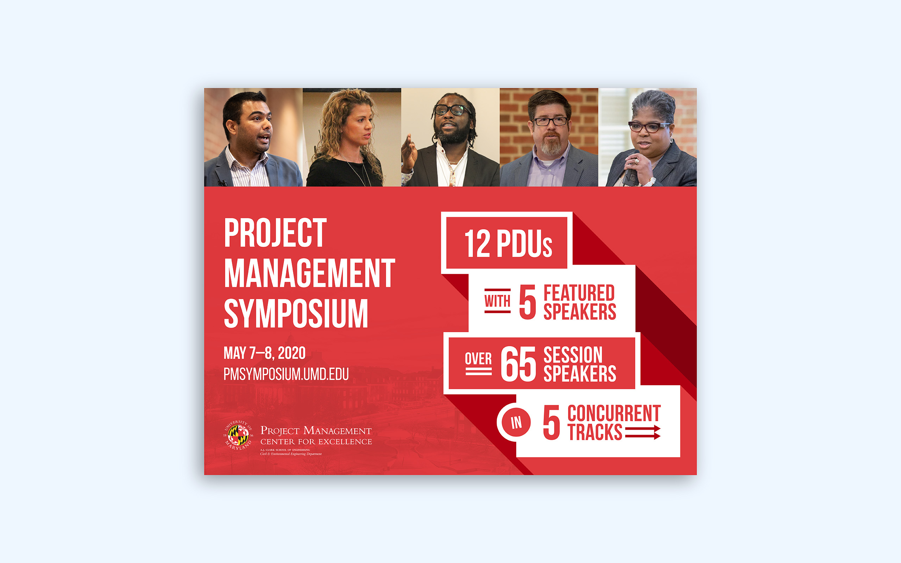
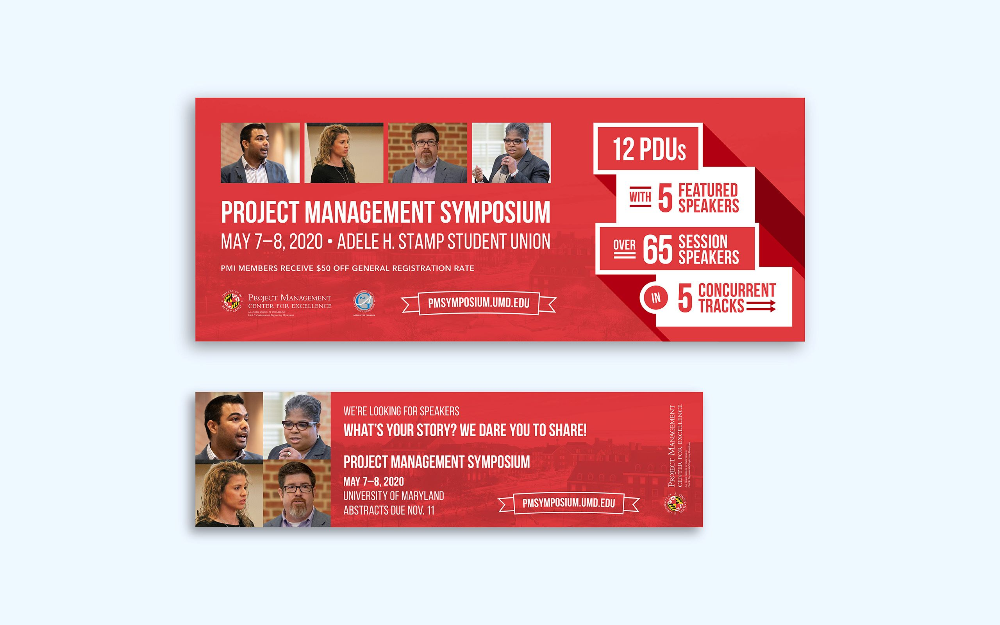
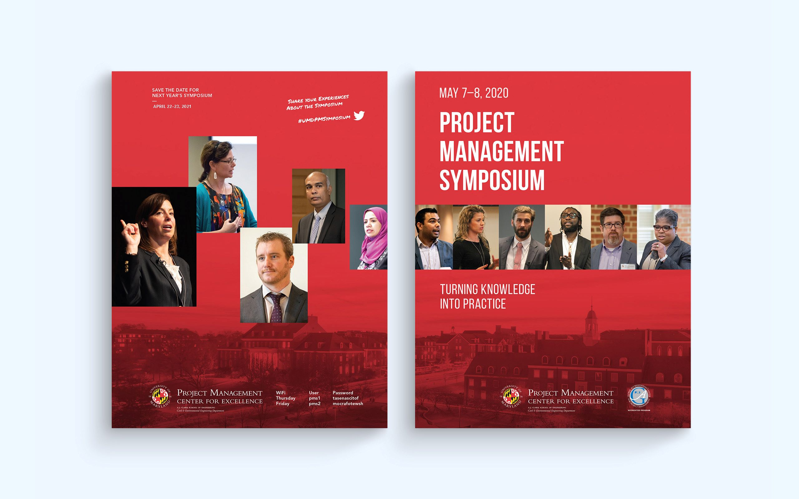
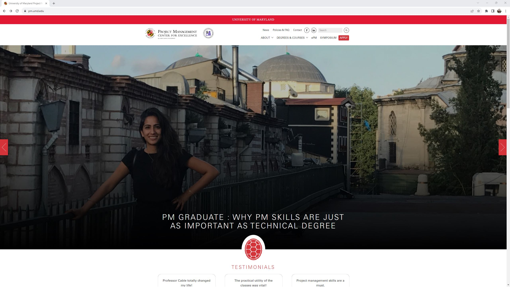
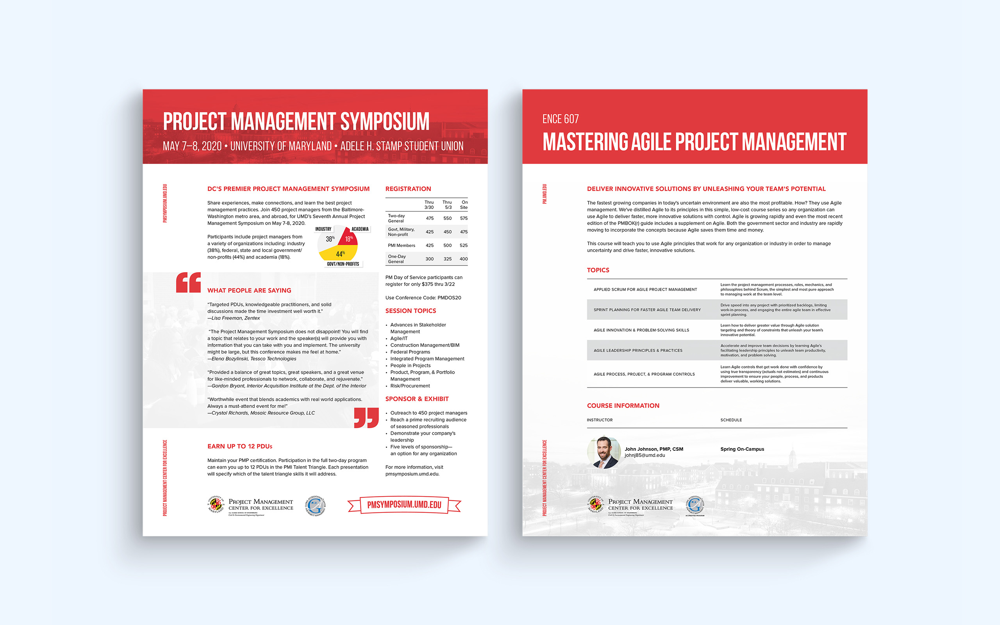
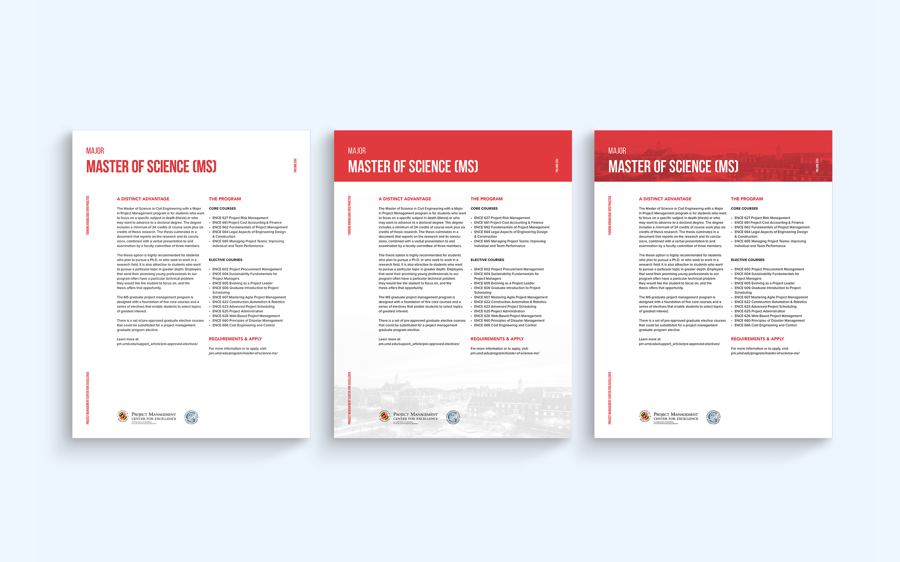
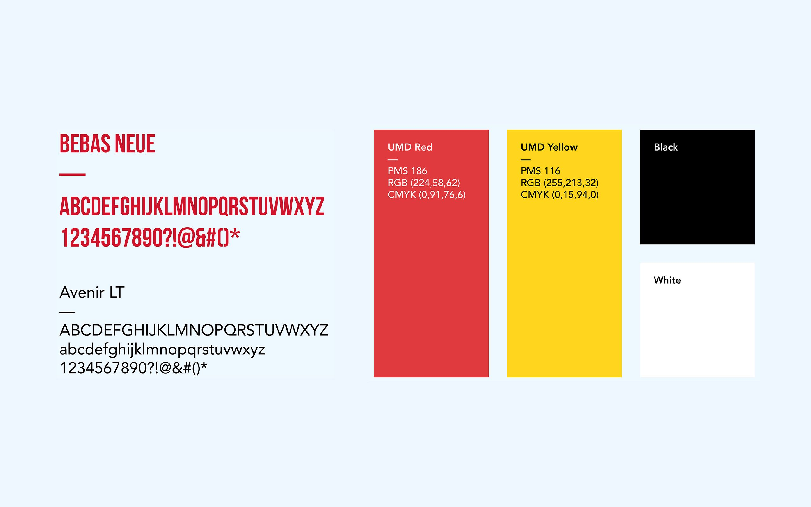
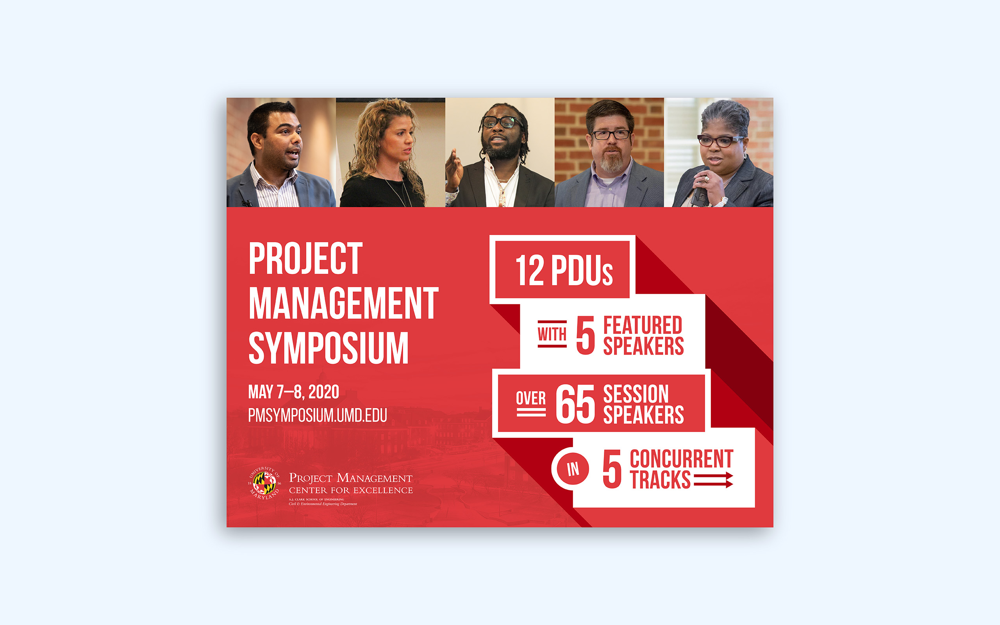
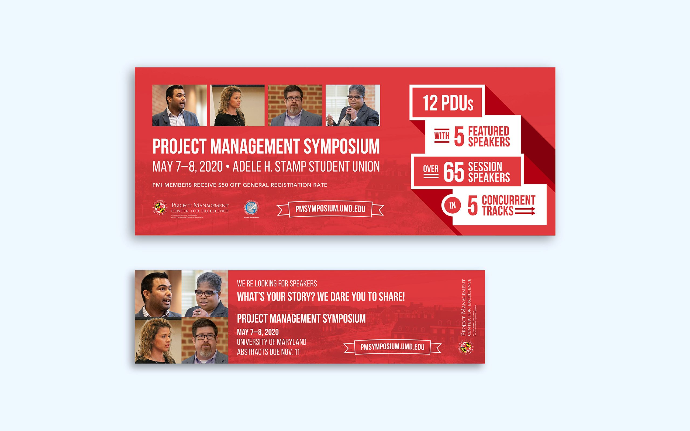
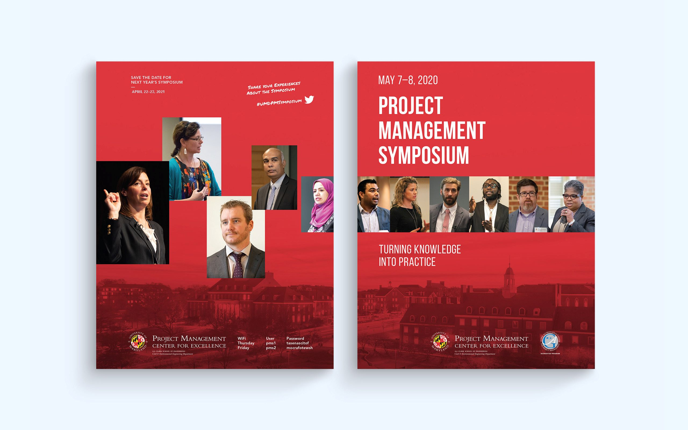
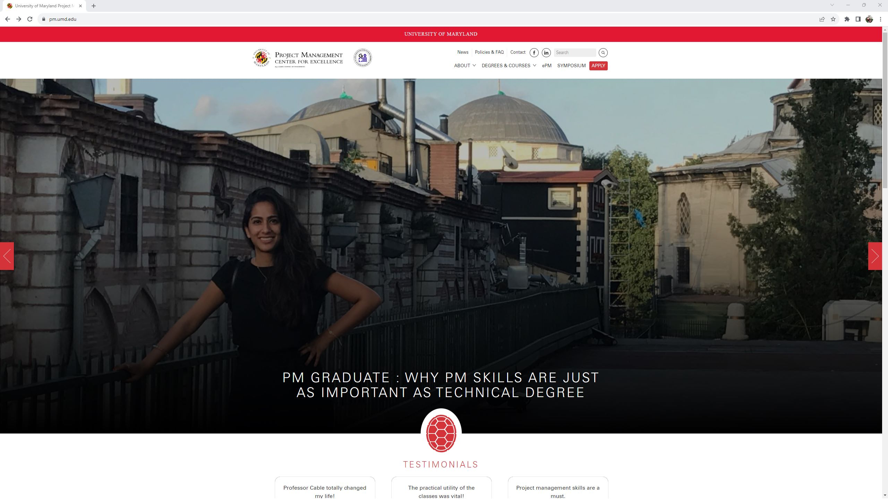
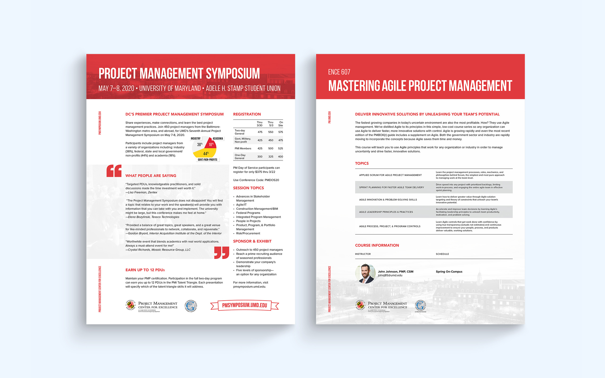
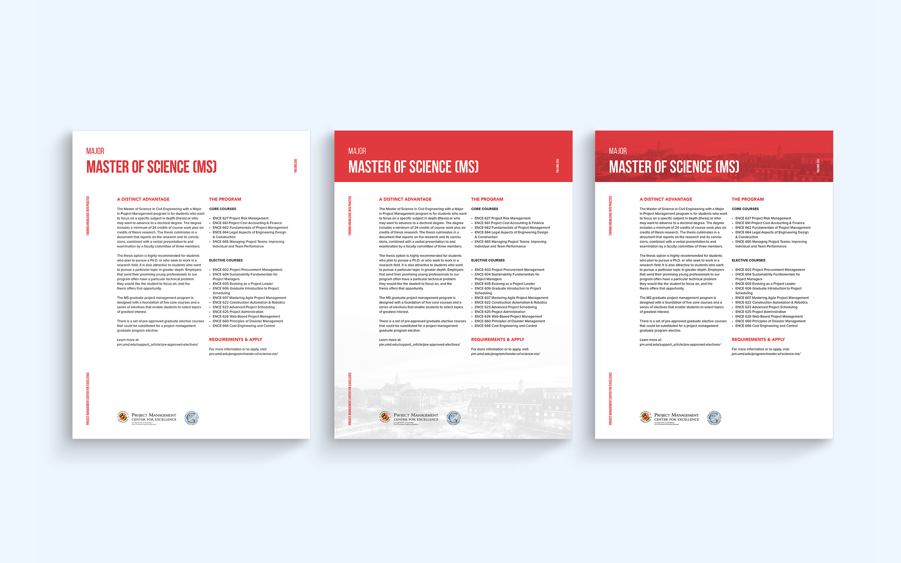
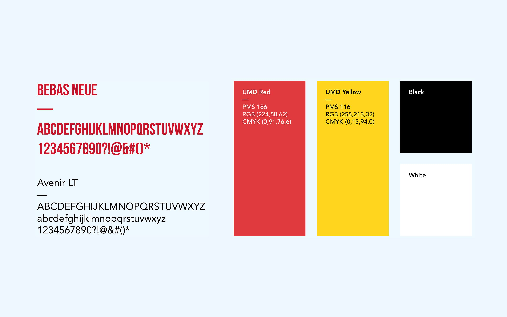